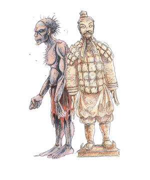

Golem, Lesser

| Flesh
| Clay
|
CLIMATE/TERRAIN:
| Any
| Any
|
FREQUENCY:
| Very rare
| Very rare
|
ORGANIZATION:
| Solitary
| Solitary
|
ACTIVITY CYCLE:
| Any
| Any
|
DIET:
| Nil
| Nil
|
INTELLIGENCE:
| Semi- (2-4)
| Non- (0)
|
TREASURE:
| Nil
| Nil
|
ALIGNMENT:
| Neutral
| Neutral
|
NO. APPEARING:
| 1
| 1
|
ARMOR CLASS:
| 9
| 7
|
MOVEMENT:
| 8
| 7
|
HIT DICE:
| 9 (40 hp)
| 11 (50 hp)
|
THAC0:
| 11
| 9
|
NO. OF ATTACKS:
| 2
| 1
|
DAMAGE/ATTACK:
| 2-16 (2d8)/2-16 (2d8)
| 3-30 (3d10)
|
SPECIAL ATTACKS:
| Nil
| See below
|
SPECIAL DEFENSES:
| See below
| See below
|
MAGIC RESISTANCE:
| Nil
| Nil
|
SIZE:
| L (7½' tall)
| L (8' tall)
|
MORALE:
| Fearless (19-20)
| Fearless (19-20)
|
XP VALUE:
| 2,000
| 5,000
|
A golem is an artificial humanoid body which is animated by an elemental
spirit and under the control of its creator.
Flesh Golem
The flesh golem stands a head and a half taller than most humans and weighs
almost 350 pounds. It is made from a ghoulish collection of stolen human body
parts, stitched together to form a single composite human body. Its skin is the
sickly green or yellow of partially decayed flesh. A flesh golem smells faintly
of freshly dug earth and dead flesh. No natural animal, such as a dog, will
willingly track a flesh golem. It wears whatever clothing its creator desires,
usually just a ragged pair of trousers. It has no possessions, and no weapons. The
golem can not speak, although it can emit a hoarse roar of sorts. It walks and
moves with a stiff jointed gait, as if it is not in complete control over its
body parts.
Combat: The lesser golems are mindless in combat. They follow the orders of their
master explicitly, and are incapable of any strategy or tactics. They are
emotionless in combat, and cannot be easily provoked (unless they have broken control
and gone berserk). They will not use weapons for combat, even if ordered to,
always preferring to strike with their fists. Flesh golems have a strength of 19
for purposes of lifting, throwing or breaking down doors.
Flesh golems can only be struck by a magical weapon. Fire and cold based
spells merely slow them for 2-12 (2d6) rounds. Any electrical attack restores 1 hit
point for each die of damage it would normally have done. All other spells are
ignored by the creature.
The elemental spirit in a lesser golem is not bound strongly, resulting in a
1% cumulative chance per round of combat, calculated independently for each
fight, that it will break free of its master. The flesh golem's master has a 10%
chance per round of regaining control. To do this he must be within 60 feet of
the flesh golem, and the creature must be able to see and hear its master. No
special spells are required to regain control, its creator just has to talk to it
forcefully and persuasively, to convince it to obey.
Habitat/Society: Golems are automatons, artificially created and under the direct control of
their creator. They have no society and are not associated with any particular
habitat. They are frequently used to guard valuable items or places. A lesser
golem can obey simple instructions involving a single, direct action. They make
poor servants because each detail of a task must be given as a separate command.
Ecology: Golems are not natural creatures, and play no part in the world's ecology.
They neither eat nor sleep, and "live" until their bodies are destroyed, usually
in combat.
Clay Golem
The clay golem is a humanoid body made from clay, and stands about 18 inches
taller than a normal man. It weighs around 600 pounds. The features are grossly
distorted from the human norm. The chest is overly large, with arms attached by
thick knots of muscle at the shoulder. Its arms hang down to its knees, and
end in short stubby fingers. It has no neck, and a large head with broad flat
features. Its legs are short and bowed, with wide flat feet. A clay golem wears no
clothing except for a metal or stiff leather garment around its hips. It
smells faintly of clay. The golem can not speak, or make any noise. It walks and
moves with a slow and clumsy gait, almost as if it were not in control over its
actions.
Combat: Clay golems conform to the strategies listed above for the flesh golem except
as noted here. A clay golem has a strength of 20 for the purposes of lifting,
throwing or smashing objects. They can only be struck by magical blunt weapons
such as hammers or maces. A move earth spell will drive the golem back 120 feet and inflict 3-36 (3d12) points of
damage upon it. A disintegrate spell merely slows the golem for 1-6 rounds and causes 1-12 points of damage.
An earthquake spell cast directly at a clay golem will stop it from moving that turn and
inflict 5-50 (5d10) points of damage. After it has engaged in at least one round
of combat, the clay golem can haste itself for 3 rounds. It can only do this once per day. Damage done by the
golem can only be cured by a heal spell from a priest of 17th level or greater.
The elemental spirit in a lesser golem is not bound strongly, resulting in a
1% cumulative chance per round of combat, calculated independently for each
fight, that it will break free of its master. If a clay golem does manage to break
control, it becomes a berserker, attacking everything in sight until it is
destroyed. Its first action is to haste itself, if it can. Unlike the flesh golem, there is no chance to regain
control of a rampaging clay golem.
(See also Wizard Spells and Priest Spells, Player’s Handbook)
Index